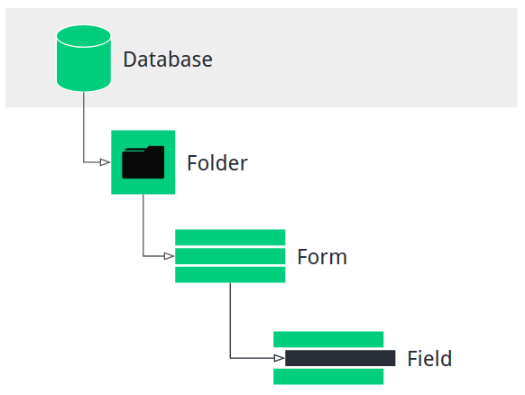
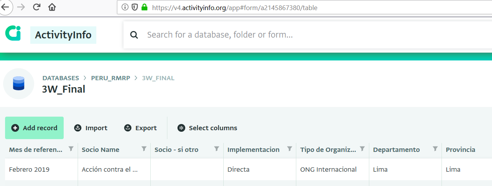
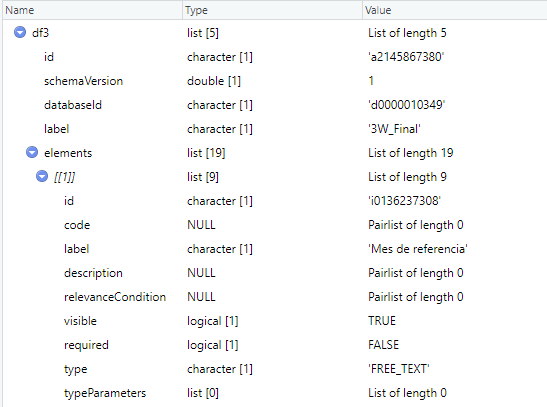
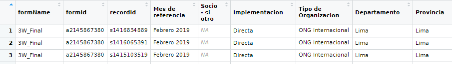

ActivityInfo is a data collection and management platform used in the humanitarian sector, designed particularly for Monitoring & Evaluation. This short tutorial aims to explain how to access data using the ActivityInfo API with R.
ActivityInfo version used for this tutorial is V4.0, focusing on the new interface (forms, not activities).
“Be Data Driven”, the company managing ActivityInfo, has developed the “activityinfo-R” package. The package conveniently allows R users to read and write data through the ActivityInfo API.
The package can be downloaded from GitHub:
install.packages("devtools")
library(devtools)
install_github("bedatadriven/activityinfo-R", ref = "release")The new ActivityInfo interface uses forms with a look and feel similar to Kobo Toolbox. A database is comprised of forms, which are in turn made up of fields representing the type of data to be collected.

(Source: ActivityInfo)
Each database, form and field have a unique ID in ActivityInfo. The easiest way to obtain a form ID is by copying it from the URL of a form’s table, which follows the structure: https://v4.activityinfo.org/app#form/{formID}/table
A database ID is also available from the URL: https://v4.activityinfo.org/app#database/d{databaseID} In previous versions, the URL looks like this: https://www.activityinfo.org/app#design/{databaseID}
Field IDs, on the other hand, can be obtained by reading the JSON file of a form, or by downloading a form schema (see below): https://www.activityinfo.org/resources/form/{formID}/schema
Authentication information is needed to access form data. The activityinfo-R package makes this easy through the ActivityInfoLogin function:
library(activityinfo)
activityInfoLogin("username", "password")This tutorial assumes that you already have a database set up for your organisation. If you have the necessary permissions, you can also create a database directly using the activityinfo-R package (see package Index).
Within your database, the function “getFormRecordTable” allows for the download of all form data in long format:
df <- getFormRecordTable(form.id = "FormID")In the case of the national coordination platform in Peru (GTRM), we have a simple 3W form to upload partner data:

To download this data, I can use the formID as shown above:
df <- getFormRecordTable(form.id = "a2145867380")Through the “queryTable” function, it is also possible to query within a form using field IDs. As mentioned above, you can see field IDs by looking at a form’s JSON schema. This can also be accessed directly in R using the “getFormSchema” function.
df <- getFormSchema("a2145867380")All IDs can be read directly in R:

You can then use the field IDs for queries within a form:
df <- queryTable("formID", columns = c(col1= "FieldID_1", col2="FieldID_2", ...))It is relevant to note that a field can be called also through the Field code, if assigned (“Fieldcode”), or the field label (“[FieldLabel]”).
Multiple referenced fields in a form (e.g. dependent dropdowns for admin levels) cannot be downloaded this way, as they are assigned a common field ID. However, queryTable also accepts formulas, so it is possible to include fields on referenced forms using the following notation:
[territory].[name]
This assumes that the form has a reference field named “territory” that refers to a Territory Form. It can also be done across multiple forms:
[territory].[province].[name]
It is also possible to download the full database contents (across all forms):
df <- getDatabaseRecordTable(database.id="DatabaseID", as.single.table = FALSE )This will create a list of all forms as data frames.
Should all forms in a database have the same structure, the “as.single.table” argument can be set to TRUE to merge them all in a single table.
When downloading a form, you will also obtain all record IDs in that form:

You can modify the value of a single record in a form through the function “updateRecord”:
updateRecord(formID, recordID, fieldValues)The activityinfo-R client has a long list of functions that were not covered here. More information is available by researching the package index in R.
Additional material is available at the following links:
ActivityInfo support is very quick to respond to any questions on the R ActivityInfo package. A big thanks to Alex Bertram at Be Data Driven, the author of the activityinfo-R package, for his great work and the resources provided.